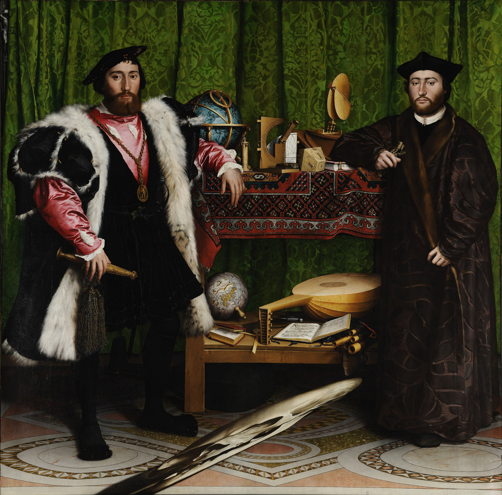

两位人物像建筑立柱，中央桌面把地球仪、乐器与书排成“知识柜”。前景灰褐色斜形从侧面看才变成骷髅。
深绿、朱红、暗金与黑褐是低饱和宝石色；红绿对比有张力，却不喧闹。骷髅藏进地面，成为华丽底下的底色。
木板油画的层层罩染让缎面、金链、地毯结与木纹近乎可触；越像真的，骷髅的失真越不安。
anamorphosis（变形透视）把骷髅拉长压扁，逼你换位置。1533 年的法国大使与主教站在宗教、外交震荡中；帷幕后的小十字架，与骷髅暗暗相答。
出处：National Gallery, London, NG1314；图像来自 Wikimedia Commons 的 Google Art Project 文件页。1533 年原作已属公版；图片版权归原作者/相关权利人，具体数字复制条件以来源页为准。赏析文字为每日艺术原创。